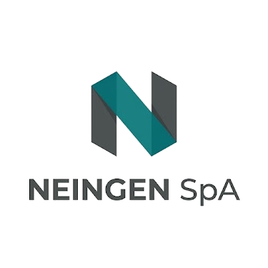

Consultoría en gestión de operaciones y mejora de procesos para empresas de minería y construcción: diagnóstico, indicadores y mejora continua.
ConversemosNEINGEN SpA es una consultora de ingeniería aplicada con base en Talca, Región del Maule. Apoya a organizaciones de minería y construcción a identificar ineficiencias, reducir pérdidas y retrabajos y aprovechar mejor sus recursos, conectando la estrategia con la ejecución operacional.
Diagnóstico y optimización de procesos productivos y de apoyo.
Compras, inventarios, almacenamiento y coordinación de recursos.
Mejora de los procesos de mantenimiento y del desempeño de los activos.
Planificación, coordinación y control de plazos, costos y recursos.
Indicadores de desempeño y mejora continua.
Apoyo a proyectos habitacionales y de edificación orientados a la industrialización y al uso eficiente de la energía.
Gestión de procesos de apoyo a las operaciones mineras.
Gestión de operaciones y proyectos constructivos y habitacionales.
Estos métodos de trabajo son aplicables a otras industrias con desafíos similares de operaciones, abastecimiento, mantenimiento, logística y proyectos.
Williams Neira Garrido, Ingeniero Civil Industrial y Magíster en Gestión Tecnológica, es Gerente General de NEINGEN SpA y consultor en gestión de operaciones. Su experiencia se ha desarrollado principalmente en dos industrias:
Minería: 9 años prestando servicios en faenas de la gran minería, en mantenimiento, abastecimiento y logística, administración de contratos y servicios, gestión de operaciones y sistemas de información.
Construcción habitacional: 18 años como Gerente de Operaciones, a cargo de la gestión de proyectos que suman 57 loteos, 6.000 viviendas y 275.000 m² construidos.
Es miembro profesional del Consejo de Construcción Industrializada (CCI).
¿Tu organización enfrenta desafíos de eficiencia operacional, gestión de activos o ejecución de proyectos? Conversemos.
contacto@neingen.clTalca, Región del Maule, Chile